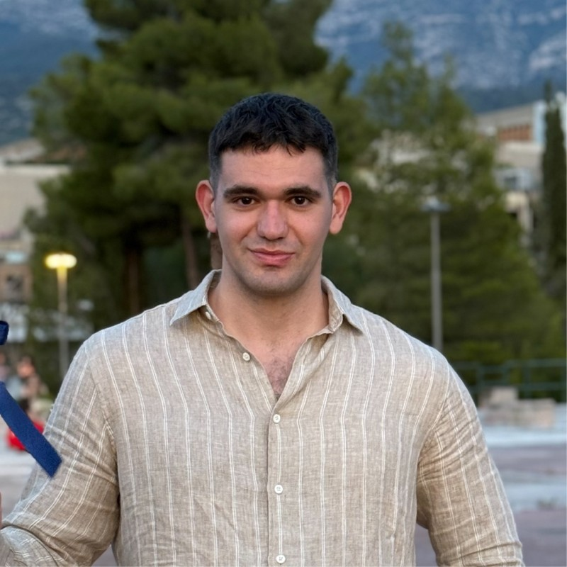

Iraklis Bournazos
Electrical & Computer Engineer — Electric Power Engineer
Address: Råsundavägen 106, 169 50 Solna, Sweden
Phone: +46 70 498 45 95 ·
Email: bournazosiraklis@gmail.com
LinkedIn: linkedin.com/in/iraklis-bournazos ·
GitHub: github.com/Iraklis-Bournazos
Personal page:
iraklis-bournazos.github.io
Electrical and Computer Engineer from the National Technical University of Athens (NTUA) with an MSc in Electric Power Engineering from KTH Royal Institute of Technology. I work at the intersection of power systems, electricity markets, forecasting and machine learning, combining physical understanding of energy systems with data-driven methods. My focus is on turning complex energy-system behaviour into rigorous, practical and deployable solutions, with a methodical and application-oriented approach to making power systems smarter, more efficient and better prepared for the energy transition.
Experience
Data Scientist Intern · rebase.energy
Stockholm, Sweden
- Built an end-to-end, leakage-safe imbalance volume forecasting pipeline for Swedish bidding zones, with dedicated models across forecast horizons.
- Developed probabilistic forecasts using quantile regression and conformal calibration, together with directional and extreme-imbalance probabilities.
- Built per-horizon feature-selection and analysis pipelines across NWP, intraday and day-ahead market data, and integrated transformer-based time-series foundation models as additional forecasting signals.
MSc Thesis Project · rebase.energy
Stockholm, Sweden
- Designed and implemented a modular end-to-end machine learning framework for day-ahead net load forecasting across 350 Norwegian municipalities, using LightGBM, CatBoost, XGBoost and ensemble modelling.
- Investigated behind-the-meter solar PV penetration and grid observability, with the findings established through a controlled synthetic experiment.
- Built the preprocessing and feature pipelines, with residual analysis, bias correction and drift handling for robustness under changing conditions.
Lab & Research Assistant · Electric Devices and Decision Systems Lab, NTUA
Athens, Greece
- Researched AI techniques for smart grids and power forecasting.
- Worked with LSTM, Bi-LSTM, GRU, random forest and XGBoost models for wind power forecasting, and designed stacked meta-learning architectures.
Platform Administrator · Climate Change Hub
Athens, Greece
- Contributed to the development of the organisation’s platform and integrated corporate social responsibility data from partner organisations.
Education
MSc, Electric Power Engineering (2-year degree, 120 ECTS)
KTH Royal Institute of Technology · Stockholm, Sweden
- Specialisation: Power System Operation, Planning, Control and Electricity Markets.
- Relevant coursework: Power System Analysis, Wind Power Systems, Power System Planning, Electricity Market Analysis, Computer Applications & Machine Learning in Electric Power Systems, Electricity Pricing & Emissions, Communication & Control in Electric Power Systems, Power Grid Technology & Substation Design.
- Degree project: A Municipal-Scale Net Load Forecasting Framework for Norway, carried out at rebase.energy.
Diploma, Electrical and Computer Engineering (5-year degree, 300 ECTS)
National Technical University of Athens · Athens, Greece
- Grade: 8.01/10, approximately top 15% of the cohort.
- Specialisation: Electric Power and Energy Systems.
- Diploma thesis: Wind Turbine Energy Forecasting with Machine Learning and Meta-Learning Methods.
Minor, Leadership and Management (30 ECTS)
American College of Greece · Athens, Greece
- GPA: 3.68/4.
Academic projects & competitions
Intraday Electricity Price Forecasting & Ensemble Modeling in European Power Markets
Quantitative Energy Trading Competition · Nitor Energy, Denmark · Tools: Python, GitHub
Multicriteria Load Control
Electric Power Engineering Project · KTH · Tools: Python, MATLAB, Raspberry Pi, Arduino
Complete study for the installation of a large wind farm with BESS in Sweden: optimal sizing, turbine and layout optimization, grid integration and techno-economic evaluation
Wind Power Systems · KTH · Tools: Python, MATLAB, Excel
Forecasting of Renewable Energy in East England Using Machine Learning Models and Multi-Model Ensemble
Computer Applications & Machine Learning in Electric Power Systems · KTH · Tools: Python, GitHub
Deterministic, Stochastic Short-Term and Dynamic Long-Term Hydro Scheduling
Power System Planning · KTH · Tools: GAMS
Analysis and modeling of DC, synchronous and induction machines: parameter estimation from lab data, modeling and torque/MTPA analysis
Electrical Machines & Drives · KTH · Tools: MATLAB, Simulink
Design of a Step-Down (Buck) DC-DC Converter
Power Electronics · KTH · Tools: MATLAB, PSpice
Skills & languages
Programming: Python, MATLAB, GAMS, Octave, Git/GitHub
Data & Machine Learning: pandas, polars, NumPy, xarray, GeoPandas, scikit-learn, LightGBM, CatBoost, XGBoost, keras, PyTorch, Hugging Face Chronos, conformal prediction (puncc)
Power system tools: PandaPower, PowerFactory, Simulink, ARISTO, PSpice, LTspice, PLECS, FEMM, pvlib
Energy data: Elhub, ENTSO-E, Nord Pool, ERA5, SMHI, Kartverket
Languages: English (fluent, C2) · Greek (native) · French (intermediate, B2) · Swedish (beginner A2, actively learning)
Awards & scholarships
- Stavros Niarchos Foundation Scholarship for Academic Excellence, 2021–2024
- Deree Merit Scholarship for Academic Excellence, 2021–2024
- Award of Democracy and Oratory Award, Model Hellenic Parliament, 2021
- Elected member of student council, NTUA, 2019–2020